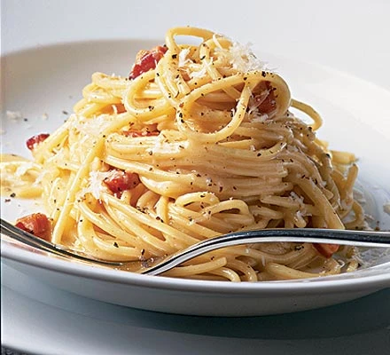

Carbonara!

Ultimate spaghetti carbonara recipe!
Discover how to make traditional spaghetti carbonara. This classic Italian pasta dish combines a silky cheese sauce with crisp pancetta and black pepper.
Ingredients
- Pancetta
- Cheese
- Parmesan
- Eggs of large size
- spaghetti
- Garlic
- Butter
Steps
- Put a large saucepan of water on to boil.
- Finely chop the 100g pancetta, having first removed any rind. Finely grate 50g pecorino cheese and 50g parmesan and mix them together.
- Beat the 3 large eggs in a medium bowl and season with a little freshly grated black pepper. Set everything aside.
- Add 1 tsp salt to the boiling water, add 350g spaghetti and when the water comes back to the boil, cook at a constant simmer, covered, for 10 minutes or until al dente (just cooked).
- Squash 2 peeled plump garlic cloves with the blade of a knife, just to bruise it.
- While the spaghetti is cooking, fry the pancetta with the garlic. Drop 50g unsalted butter into a large frying pan or wok and, as soon as the butter has melted, tip in the pancetta and garlic.